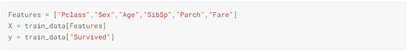

First Experience with Kaggle
Competition :- Titanic - Machine Learning from Disaster
Github
As a beginner to kaggle the Alexis Cook's Titanic Tutorial helped me in understanding how kaggle works and also helped me with my first Submission
Initial Submission with the help of tutorial
1. We start with reading the input files that is the training data file and test data file
2. Calulating the percentage of women and men who survived
3. We use RandomForestClassifier to predict the data
4. This submission gave me a score of 0.77511
Contribution/Improvisation
1. Read the data
2. Visualise the data to get more insight on the data
a. Plotting Survived over number of people we see that the number of people dead is more than the number of people survived.
b. Survived by class.We can see that 65% of class 1 people survived and 48% class 2 people survived and 25% class 3 people have survived
c. Survived by Salutation.
d. Survived by Age. We can see that people in the Age range 15-40 have the highest survival rate. Even the deaths are highest in that range
d. Survived by Embarked.
3. Cleaning the data. Dealing with missing values in Training Data
a. View the data shape and description
b. Search for null values in the Dataset from the below representation we can see that Age, Cabin and Embarked have null values
c. We find the Median of Age column and fill the null values with the Median
d. For missing values in Embarked we find the place where most number of people embarked and assign that place to the missing values
e. Dropping the cabin values cause I believe they dont have much importance
f. No more null values in Training data
g. Converting the string data in sex column to numerical data so we can use it for comparison
h. Features to compare
i. Checking which model gives the most accurate output from the output we can see that Gradient Boosting Classifier has the most accuracy
4. Cleaning the data. Dealing with missing values in Test Data
a. Null values in Test data. Age, Fare and Cabin have null values in the test dataset
b. Missing values in Age is filled with its median values
c. Missing values in Fare is filled with its median values
d. Converting the string data in sex column to numerical data so we can use it for comparison
e. Applying the GradientBoostingClassifier to predict the values. This model has the highest accuracy score

f. This Submission gave me a Score of 0.76555
Conclusion:
My Approach involved, classifying the data applying Machine Learning models to find the number of survivors from the given test data.
I have taken the dataset tried cleaning the data by filling the null values, in this process I have identified and eliminated the missing values.
From the cleaned dataset I will be able to derive a better conclusion and thus by using relevant attributes from the data like age, class, SibSp and parch I tried to compare the number of survivors under each category.
I tried to find the model with the least error and thus found the Gradient Boost model to be the most suitable.
Even though I could not land a successful result by increasing my Score but my tries will never stop until I derive an efficient model to find the survivors from the test data.